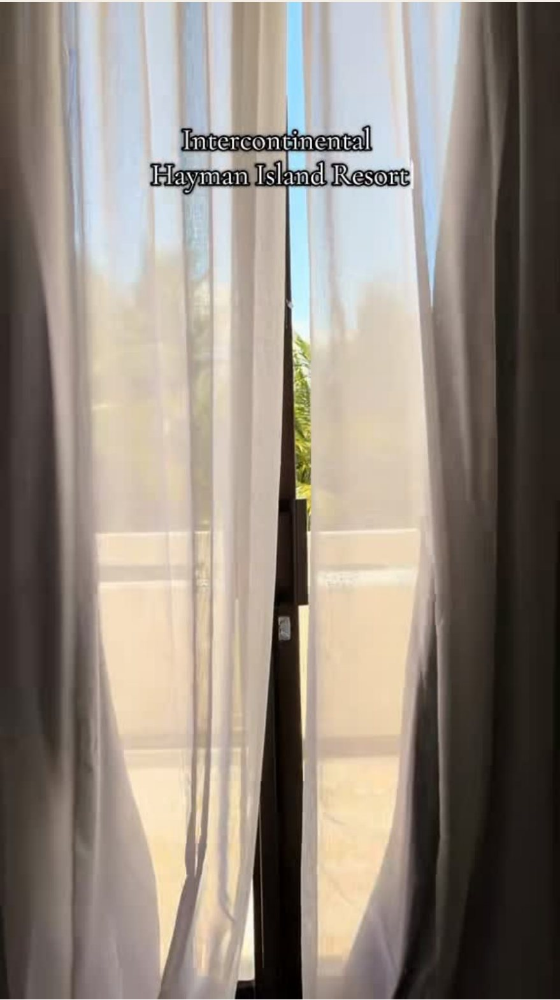

Hôtellerie& lifestyle
Au-delà de la chambre — spaces & experiences.
Traduire l’identité d’un lieu à travers son atmosphère, sa lumière, ses matières et ses usages.
L’objectif : construire une lecture sensible de l’espace et transmettre ce qui fait sa singularité, au-delà de sa fonction.
Spaces & experiences
Visual storytelling · Hospitality content · Experience direction


Projet spéculatif — non commandé par l’InterContinental.